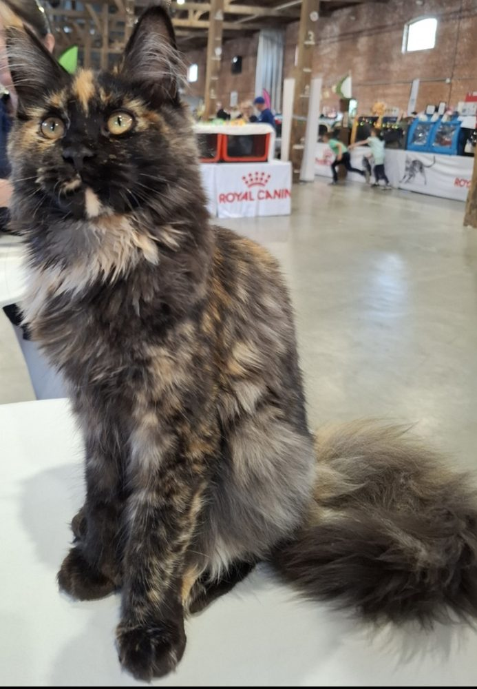
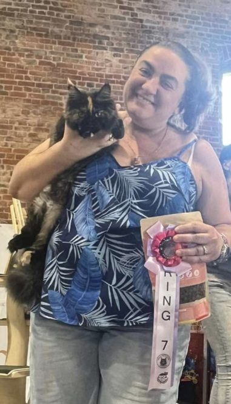
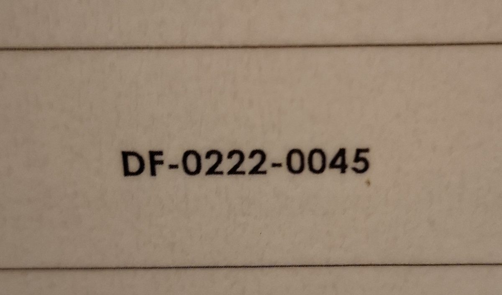
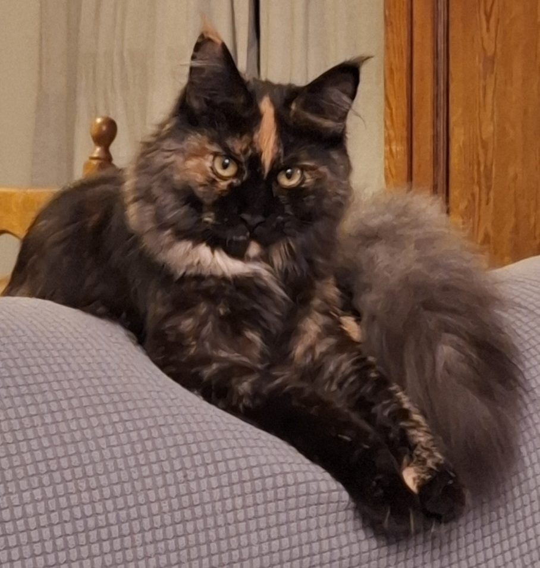
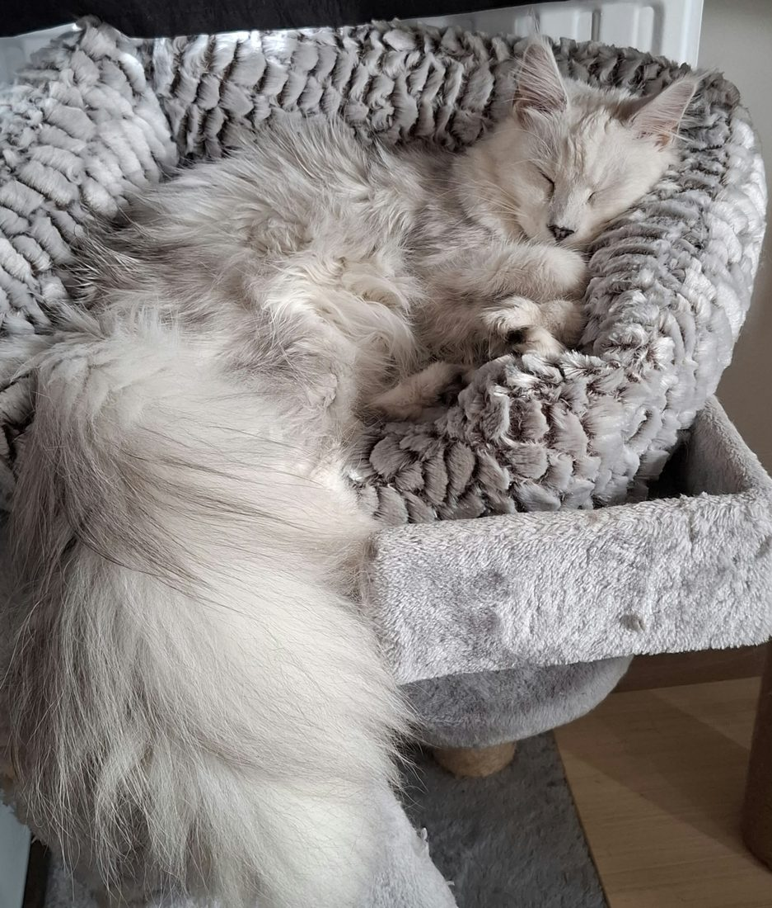
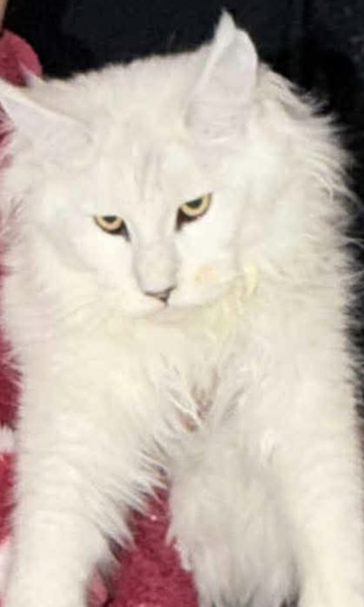
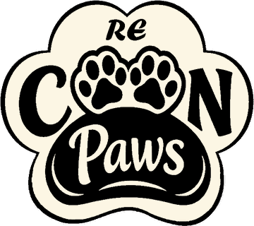
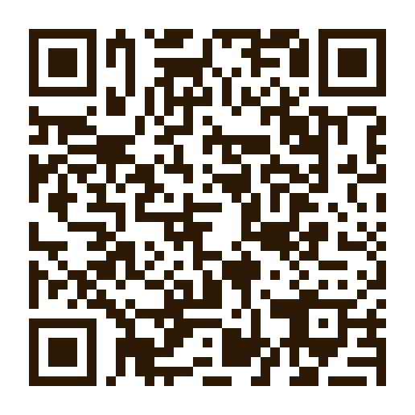

🏆Photo à venir
🏆Photo à venirAnya brille à Herve
À l'exposition féline de Herve, Anya a obtenu la qualification « Excellence 1 » et le titre de Best Variété.
Famille, éthique & passion depuis le premier ronron
Bienvenue chez M-CoonPaws, un élevage familial et éthique de Maine Coon en Belgique. Chaque chaton grandit entouré d'amour, dans un vrai foyer.
M-CoonPaws est un projet de vie construit autour du bien-être animal et humain.
Élevage éthique de Maine Coon : une portée par an et par femelle, chatons socialisés en famille dès la naissance, avec tests génétiques et pedigree.
ÉlevageLe refuge de demain. Des Maine Coon stérilisés jouent les grands frères et sœurs pour redonner confiance aux chats errants avant leur adoption.
Refuge · Projet futurSéances de médiation féline pour les personnes atteintes de maladies chroniques et les résidents de maisons de repos.
Bien-êtreLes moments importants de la chatterie. Suivez le quotidien de nos chats sur nos réseaux.
🏆Photo à venirÀ l'exposition féline de Herve, Anya a obtenu la qualification « Excellence 1 » et le titre de Best Variété.
 🎀Photo à venir
🎀Photo à venirAméthyste sera présentée lors d'une exposition féline TICA, une fédération qui reconnaît les Maine Coon polydactyles.


Anya et Améthyste ont découvert les rings d'exposition. Anya a obtenu la qualification « Excellence 3 » et la 7ᵉ place du ring, sur 20 chatons au départ.

📜Photo à venirM-CoonPaws est officiellement agréée comme élevage en Belgique. Anya et Améthyste sont arrivées à la maison le même mois.
Deux femelles choisies pour leur caractère, leur santé et leur pedigree.

🐱Photo à venirAnya est issue d'une descendance d'exception : plusieurs Grands Champions de concours félins figurent parmi ses ancêtres. Douce, curieuse et très câline, elle suit toute la famille dans la maison.
🏆 Lignée de Grands Champions
🐱Photo à venirPlusieurs de ses ancêtres ont été classés en concours félins, dont certains Grands Champions mondiaux. Améthyste porte une robe rare et très recherchée, et ses pattes polydactyles font tout son charme.
🥇 Ancêtres Grands Champions mondiauxNous travaillons avec des chatteries partenaires de confiance, qui partagent notre vision d'un élevage éthique.

🐱Photo à venirChoisi avec son éleveuse pour son tempérament, sa santé et la complémentarité de sa lignée avec celle d'Améthyste.
À terme, M-CoonPaws accueillera son propre mâle reproducteur. En attendant, chaque mariage est préparé avec des éleveurs partenaires et des tests de santé à jour des deux côtés.
Chaque chaton est socialisé en famille et part avec pedigree, vaccins et puce électronique, pas avant 13 semaines.
Mariage prévu en octobre 2026. Naissance attendue fin décembre 2026 ou début 2027, départs des chatons au printemps 2027.
Date précisée dès que le mâle partenaire sera choisi.
Les portées financent la construction du futur refuge.
Vous souhaitez accueillir un chaton M-CoonPaws ? Inscrivez-vous sur la liste d'attente pour être contacté en priorité.
M'inscrireLe ronronnement comme apaisement naturel. Anya, Améthyste et Calypso accompagnent les séances de médiation féline.
Séances à domicile ou chez nous pour les personnes qui vivent avec la douleur, l'anxiété ou la fatigue.
Séances collectives apaisantes, avec l'accord de l'établissement.
Plus tard, les séances permettront aussi de rencontrer les chats du refuge avant l'adoption.
Contactez-nous pour une séance adaptée à votre situation.
 💚Photo à venir
💚Photo à venir
— Refuge à l'écoute des oubliés —
Un refuge à l'écoute des oubliés, financé par l'élevage éthique.
Accueil, soins et préparation à l'adoption des chats et chatons errants.
Des Maine Coon stérilisés pour aider les nouveaux arrivants à reprendre confiance.
D'autres animaux accueillis selon nos capacités.
La chathérapie étendue aux pensionnaires du refuge.
Chaque don rapproche le futur refuge de la réalité. Votre soutien, quel qu'il soit, fait toute la différence.

Ouvrez votre application bancaire, scannez le code et choisissez le montant de votre don.
Vous êtes sur votre téléphone ? Enregistrez le QR code et importez-le depuis votre application bancaire, ou copiez les coordonnées du virement.
Enregistrer le QR codeIBAN copié. Collez-le dans votre application bancaire et choisissez le montant.
Des objets aux couleurs de la chatterie, pour se faire plaisir et soutenir le projet. La boutique ouvrira avec l'arrivée des premiers chatons.
Laissez votre email pour être prévenu de l'ouverture.
Merci, vous serez prévenu en premier !
Liste d'attente, séance de chathérapie ou simple curiosité : écrivez-nous, nous répondons à chaque message.
Gaëlle — M-CoonPaws
Braine-l'Alleud, Belgique